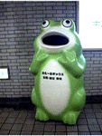

全国かえる奉賛会の総本山はこちらだよ。このバナーをクリックしてみよう！ |
|
【過去の新聞】
|
|
【カエル速報】 1.カエルグッズ 2.カエルリンク 3.国家健全化計画 4.謎の髭男 5.とっくりくん 6. 街頭で見た蛙 |
| 大王様へのメール |
奉賛会推薦図書
フロッグマン |
|
 |
大阪地下鉄の構内には、「かえ〜るボックス」と称する大人の背丈くらいあるカエ ル型の古新聞・古雑誌回収箱があるのです。
じつにとぼけた愛嬌のあるやつで、貯金箱にして売 ってくれないかといつも思っています。なにしろ、雑誌を投げ込みやすいように、いつもぽか〜 んと口を開けていますので、オウムの事件のときなどうまく蓋ができず、弱った当局はボール紙 をマスクのように貼りつけて対処しておりました。
風邪を引いたみたいで、道行く人はオウムの ことも忘れて爆笑しておりました。
考案者にあいたいなー
カエルボックスの考案者は、いったい誰なんだろう。お役所の人かな｢雑誌リサイクルするんやから、キャラはカエルに決まっとんやろ。カエルは帰るに通じるんや。
そんなもん常識やないかー〈関西弁知らないのでおしえてくれー！！〉｣と部下を怒鳴り散らして、カエルボックスつくらしたにゃろうか。作成する業者とかも、うで組して考えこんだんちゃうやろか。「表面のぬめり感をいかに出すかが鍵やな」などと構想２０日くらいかけて材質を選定したのであろうか。 次回は、この大阪でつちかったノウハウをいかして、ぜひとも福岡でも、カエルボックスを設置してほしいでんなー
トンボ同志に感状を授与
えー、写真と情報を届けていただいたトンボ同志には、豪華感状を授与しましたっ！！。ああー感状作のが疲れた。きょうはもう寝る（笑）| 写真の説明＝表面がみょうにつるつるしてテカっているのが、両生類っぽくていいですよね。 |